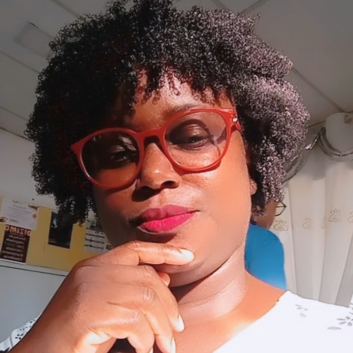

Sobre a Fundadora
A fundadora da Lane Tranças é Lucilane Conceição Lima, 40 anos, trancista desde 2004.
Com anos de experiência na área da beleza, Lucilane construiu sua trajetória com dedicação, prática e compromisso com cada cliente. Além da sua atuação como trancista, é formada em Recursos Humanos pela faculdade Uni Jorge, o que reforça sua visão profissional.